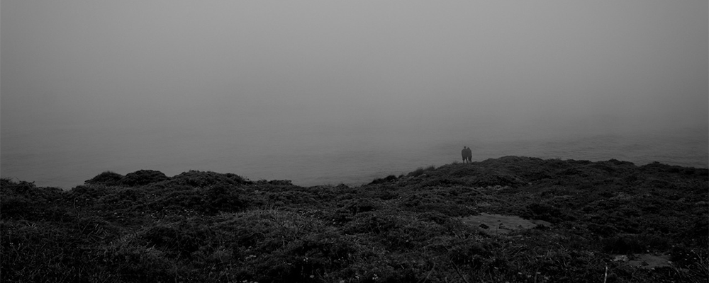

View photography blog
I've been an amateur photographer for a few years; I'm especially interested in wide 16:9 or square crops, architectural and landscape photography, and frames within frames.
- Years 2011–2013
- For Personal work

I've been an amateur photographer for a few years; I'm especially interested in wide 16:9 or square crops, architectural and landscape photography, and frames within frames.